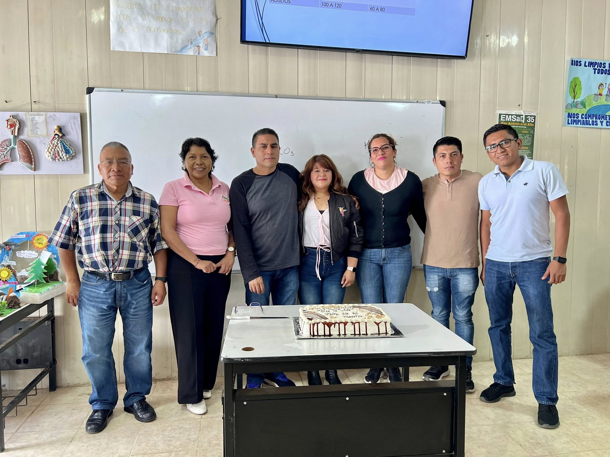

Dirección
Coordina el proyecto educativo y acompaña la mejora continua.
Daza Canseco Sergio Adrián (Director)
Somos un equipo comprometido con tu formación académica y el desarrollo de valores. Aquí encontrarás una breve presentación de quienes acompañan el día a día en el EMSaD 35.

Perfiles de los docentes y directivos
Coordina el proyecto educativo y acompaña la mejora continua.
Apoya hábitos, organización y desempeño escolar.
Equipo docente que acompaña en el aula.

Fortalece actividades, convivencia y atención a estudiantes.
Esta página describe cómo se organiza el acompañamiento en el EMSaD 35. Actualízala con nombres, fotos y horarios reales para que se vea más completo.
^-^
Identificamos necesidades y metas para establecer un plan claro.
Retroalimentación constante para mejorar desempeño y hábitos.
Reconocemos avances y fortalecemos la permanencia escolar.